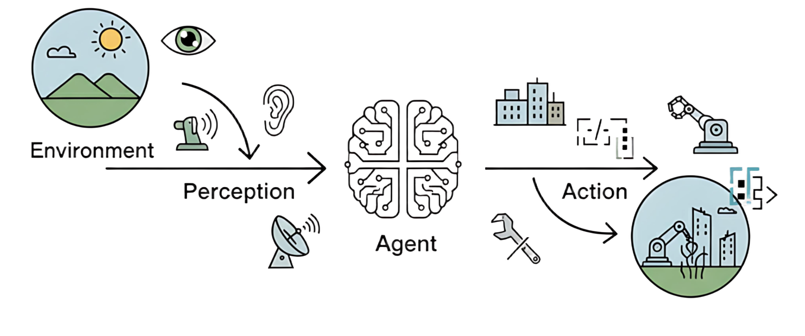
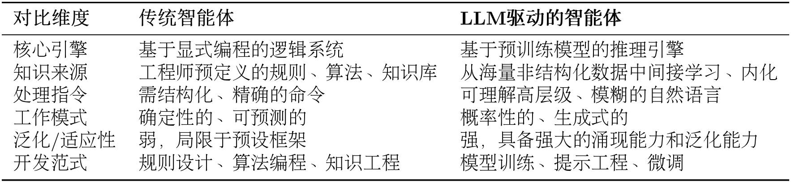
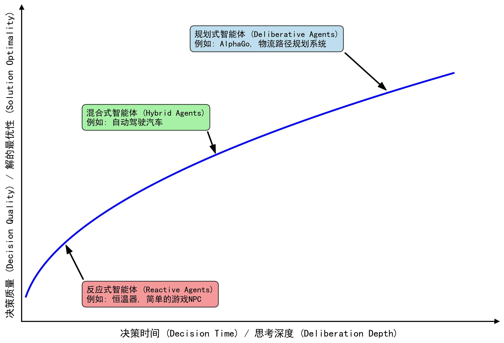
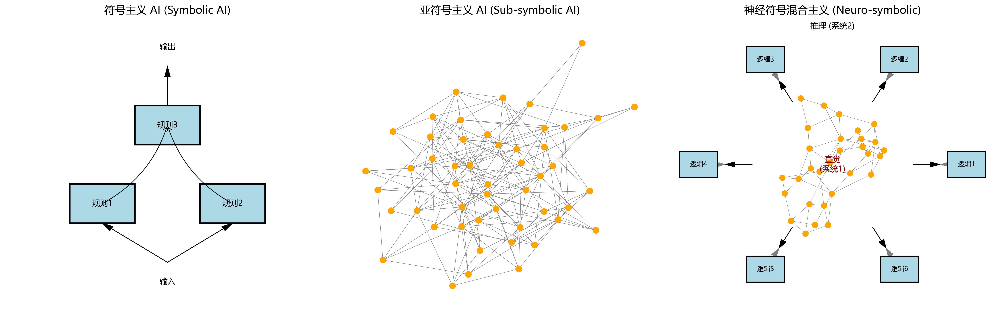
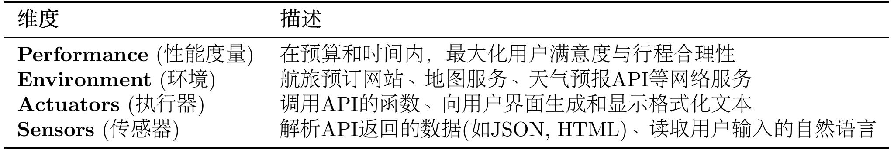
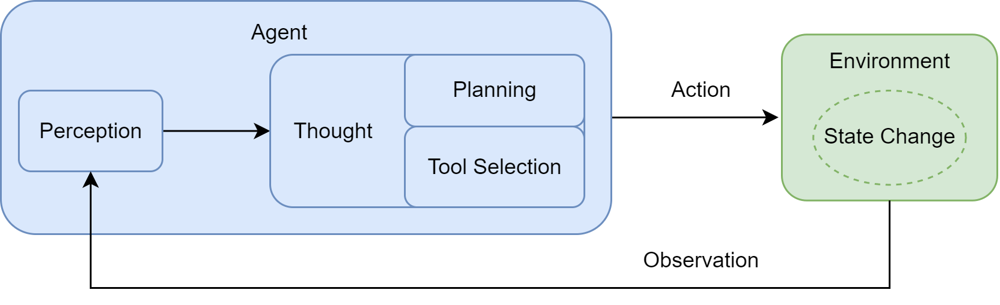
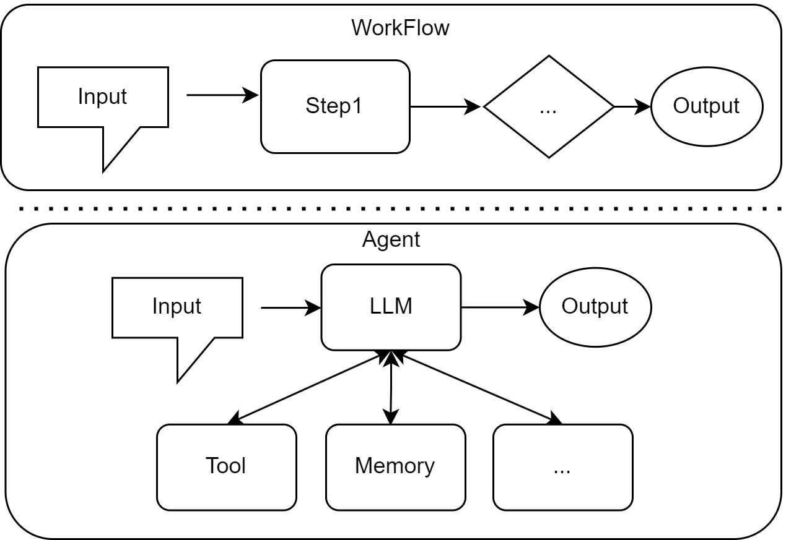

第一章 初识智能体¶
欢迎来到智能体的世界！在人工智能浪潮席卷全球的今天，智能体（Agent）已成为驱动技术变革与应用创新的核心概念之一。无论你的志向是成为 AI 领域的研究者、工程师，还是希望深刻理解技术前沿的观察者，掌握智能体的本质，都将是你知识体系中不可或缺的一环。
因此，在本章，让我们回到原点，一起探讨几个问题：智能体是什么？它有哪些主要的类型？它又是如何与我们所处的世界进行交互的？通过这些讨论，希望能为你未来的学习和探索打下坚实的基础。

图 1.1 智能体与环境的基本交互循环
1.1 什么是智能体？¶
在探索任何一个复杂概念时，我们最好从一个简洁的定义开始。在人工智能领域，智能体被定义为任何能够通过传感器（Sensors）感知其所处环境（Environment），并自主地通过执行器（Actuators）采取行动（Action）以达成特定目标的实体。
这个定义包含了智能体存在的四个基本要素。环境是智能体所处的外部世界。对于自动驾驶汽车，环境是动态变化的道路交通；对于一个交易算法，环境则是瞬息万变的金融市场。智能体并非与环境隔离，它通过其传感器持续地感知环境状态。摄像头、麦克风、雷达或各类应用程序编程接口（Application Programming Interface, API）返回的数据流，都是其感知能力的延伸。
获取信息后，智能体需要采取行动来对环境施加影响，它通过执行器来改变环境的状态。执行器可以是物理设备（如机械臂、方向盘）或虚拟工具（如执行一段代码、调用一个服务）。
然而，真正赋予智能体"智能"的，是其自主性（Autonomy）。智能体并非只是被动响应外部刺激或严格执行预设指令的程序，它能够基于其感知和内部状态进行独立决策，以达成其设计目标。这种从感知到行动的闭环，构成了所有智能体行为的基础，如图 1.1 所示。
1.1.1 传统视角下的智能体¶
在当前大语言模型（Large Language Model, LLM）的热潮出现之前，人工智能的先驱们已经对“智能体”这一概念进行了数十年的探索与构建。这些如今我们称之为“传统智能体”的范式，并非单一的静态概念，而是经历了一条从简单到复杂、从被动反应到主动学习的清晰演进路线。
这个演进的起点，是那些结构最简单的反射智能体（Simple Reflex Agent）。它们的决策核心由工程师明确设计的“条件-动作”规则构成，如图 1.2 所示。经典的自动恒温器便是如此：若传感器感知的室温高于设定值，则启动制冷系统。
这种智能体完全依赖于当前的感知输入，不具备记忆或预测能力。它像一种数字化的本能，可靠且高效，但也因此无法应对需要理解上下文的复杂任务。它的局限性引出了一个关键问题：如果环境的当前状态不足以作为决策的全部依据，智能体该怎么办？
图 1.2 简单反射智能体的决策逻辑示意图
为了回答这个问题，研究者们引入了“状态”的概念，发展出基于模型的反射智能体（Model-Based Reflex Agent）。这类智能体拥有一个内部的世界模型（World Model），用于追踪和理解环境中那些无法被直接感知的方面。它试图回答：“世界现在是什么样子的？”。例如，一辆在隧道中行驶的自动驾驶汽车，即便摄像头暂时无法感知到前方的车辆，它的内部模型依然会维持对那辆车存在、速度和预估位置的判断。这个内部模型让智能体拥有了初级的“记忆”，使其决策不再仅仅依赖于瞬时感知，而是基于一个更连贯、更完整的世界状态理解。
然而，仅仅理解世界还不够，智能体需要有明确的目标。这促进了基于目标的智能体（Goal-Based Agent）的发展。与前两者不同，它的行为不再是被动地对环境做出反应，而是主动地、有预见性地选择能够导向某个特定未来状态的行动。这类智能体需要回答的问题是：“我应该做什么才能达成目标？”。经典的例子是 GPS 导航系统：你的目标是到达公司，智能体会基于地图数据（世界模型），通过搜索算法（如 A*算法）来规划（Planning）出一条最优路径。这类智能体的核心能力体现在了对未来的考量与规划上。
更进一步，现实世界的目标往往不是单一的。我们不仅希望到达公司，还希望时间最短、路程最省油并且避开拥堵。当多个目标需要权衡时，基于效用的智能体（Utility-Based Agent）便随之出现。它为每一个可能的世界状态都赋予一个效用值，这个值代表了满意度的高低。智能体的核心目标不再是简单地达成某个特定状态，而是最大化期望效用。它需要回答一个更复杂的问题：“哪种行为能为我带来最满意的结果？”。这种架构让智能体学会在相互冲突的目标之间进行权衡，使其决策更接近人类的理性选择。
至此，我们讨论的智能体虽然功能日益复杂，但其核心决策逻辑，无论是规则、模型还是效用函数，依然依赖于人类设计师的先验知识。如果智能体能不依赖预设，而是通过与环境的互动自主学习呢？
这便是学习型智能体（Learning Agent）的核心思想，而强化学习（Reinforcement Learning, RL）是实现这一思想最具代表性的路径。一个学习型智能体包含一个性能元件（即我们前面讨论的各类智能体）和一个学习元件。学习元件通过观察性能元件在环境中的行动所带来的结果来不断修正性能元件的决策策略。
想象一个学习下棋的 AI。它开始时可能只是随机落子，当它最终赢下一局时，系统会给予它一个正向的奖励。通过大量的自我对弈，学习元件会逐渐发现哪些棋路更有可能导向最终的胜利。AlphaGo Zero 是这一理念的一个里程碑式的成就。它在围棋这一复杂博弈中，通过强化学习发现了许多超越人类既有知识的有效策略。
从简单的恒温器，到拥有内部模型的汽车，再到能够规划路线的导航、懂得权衡利弊的决策者，最终到可以通过经验自我进化的学习者。这条演进之路，展示了传统人工智能在构建机器智能的道路上所经历的发展脉络。它们为我们今天理解更前沿的智能体范式，打下了坚实而必要的基础。
1.1.2 大语言模型驱动的新范式¶
以GPT（Generative Pre-trained Transformer）为代表的大语言模型的出现，正在显著改变智能体的构建方法与能力边界。由大语言模型驱动的 LLM 智能体，其核心决策机制与传统智能体存在本质区别，从而赋予了其一系列全新的特性。
这种转变，可以从两者在核心引擎、知识来源、交互方式等多个维度的对比中清晰地看出，如表 1.1 所示。简而言之，传统智能体的能力源于工程师的显式编程与知识构建，其行为模式是确定且有边界的；而 LLM 智能体则通过在海量数据上的预训练，获得了隐式的世界模型与强大的涌现能力，使其能够以更灵活、更通用的方式应对复杂任务。
表 1.1 传统智能体与 LLM 驱动智能体的核心对比

这种差异使得 LLM 智能体可以直接处理高层级、模糊且充满上下文信息的自然语言指令。让我们以一个“智能旅行助手”为例来说明。
在 LLM 智能体出现之前，规划旅行通常意味着用户需要在多个专用应用（如天气、地图、预订网站）之间手动切换，并由用户自己扮演信息整合与决策的角色。而一个 LLM 智能体则能将这个流程整合起来。当接收到“规划一次厦门之旅”这样的模糊指令时，它的工作方式体现了以下几点：
- 规划与推理：智能体首先会将这个高层级目标分解为一系列逻辑子任务，例如：
[确认出行偏好] -> [查询目的地信息] -> [制定行程草案] -> [预订票务住宿]。这是一个内在的、由模型驱动的规划过程。 - 工具使用：在执行规划时，智能体识别到信息缺口，会主动调用外部工具来补全。例如，它会调用天气查询接口获取实时天气，并基于“预报有雨”这一信息，在后续规划中倾向于推荐室内活动。
- 动态修正：在交互过程中，智能体会将用户的反馈（如“这家酒店超出预算”）视为新的约束，并据此调整后续的行动，重新搜索并推荐符合新要求的选项。整个“查天气 → 调行程 → 订酒店”的流程，展现了其根据上下文动态修正自身行为的能力。
总而言之，我们正从开发专用自动化工具转向构建能自主解决问题的系统。核心不再是编写代码，而是引导一个通用的“大脑”去规划、行动和学习。
1.1.3 智能体的类型¶
继上文回顾智能体的演进后，本节将从三个互补的维度对智能体进行分类。
（1）基于内部决策架构的分类
第一种分类维度是依据智能体内部决策架构的复杂程度，这个视角在《Artificial Intelligence: A Modern Approach》中系统性地提出[1]。正如 1.1.1 节所述，传统智能体的演进路径本身就构成了最经典的分类阶梯，它涵盖了从简单的反应式智能体，到引入内部模型的模型式智能体，再到更具前瞻性的基于目标和基于效用的智能体。此外，学习能力则是一种可赋予上述所有类型的元能力，使其能通过经验自我改进。
（2）基于时间与反应性的分类
除了内部架构的复杂性，还可以从智能体处理决策的时间维度进行分类。这个视角关注智能体是在接收到信息后立即行动，还是会经过深思熟虑的规划再行动。这揭示了智能体设计中一个核心权衡：追求速度的反应性（Reactivity）与追求最优解的规划性（Deliberation）之间的平衡，如图 1.3 所示。

图 1.3 智能体决策时间与质量关系图
- 反应式智能体 (Reactive Agents)
这类智能体对环境刺激做出近乎即时的响应，决策延迟极低。它们通常遵循从感知到行动的直接映射，不进行或只进行极少的未来规划。上文的简单反应式和基于模型的智能体都属于此类别。
其核心优势在于速度快、计算开销低，这在需要快速决策的动态环境中至关重要。例如，车辆的安全气囊系统必须在碰撞发生的毫秒内做出反应，任何延迟都可能导致严重后果；同样，高频交易机器人也必须依赖反应式决策来捕捉稍纵即逝的市场机会。然而，这种速度的代价是“短视”，由于缺乏长远规划，反应式智能体容易陷入局部最优，难以完成需要多步骤协调的复杂任务。
- 规划式智能体(Deliberative Agents)
与反应式智能体相对，规划式（或称审议式）智能体在行动前会进行复杂的思考和规划。它们不会立即对感知做出反应，而是会先利用其内部的世界模型，系统地探索未来的各种可能性，评估不同行动序列的后果，以期找到一条能够达成目标的最佳路径 。基于目标和基于效用的智能体是典型的规划式智能体。
可以将其决策过程类比为一位棋手。他不会只看眼前的一步，而是会预想对手可能的应对，并规划出后续几步甚至十几步的棋路。这种深思熟虑的能力使其能够处理复杂的、需要长远眼光的任务，例如制定一份商业计划或规划一次长途旅行。它们的优势在于决策的战略性和远见。然而，这种优势的另一面是高昂的时间和计算成本。在瞬息万变的环境中，当规划式智能体还在深思熟虑时，采取行动的最佳时机可能早已过去。
- 混合式智能体(Hybrid Agents)
现实世界的复杂任务，往往既需要即时反应，也需要长远规划。例如，我们之前提到的智能旅行助手，既要能根据用户的即时反馈（如“这家酒店太贵了”）调整推荐（反应性），又要能规划出为期数天的完整旅行方案（规划性）。因此，混合式智能体应运而生，它旨在结合两者的优点，实现反应与规划的平衡。
一种经典的混合架构是分层设计：底层是一个快速的反应模块，处理紧急情况和基本动作；高层则是一个审慎的规划模块，负责制定长远目标。而现代的 LLM 智能体，则展现了一种更灵活的混合模式。它们通常在一个“思考-行动-观察”的循环中运作，巧妙地将两种模式融为一体：
- 规划(Reasoning) ：在“思考”阶段，LLM 分析当前状况，规划出下一步的合理行动。这是一个审议过程。
- 反应(Acting & Observing) ：在“行动”和“观察”阶段，智能体与外部工具或环境交互，并立即获得反馈。这是一个反应过程。
通过这种方式，智能体将一个需要长远规划的宏大任务，分解为一系列“规划-反应”的微循环。这使其既能灵活应对环境的即时变化，又能通过连贯的步骤，最终完成复杂的长期目标。
（3）基于知识表示的分类
这是一个更根本的分类维度，它探究智能体用以决策的知识，究竟是以何种形式存于其“思想”之中。这个问题是人工智能领域一场持续半个多世纪的辩论核心，并塑造了两种截然不同的 AI 文化。
- 符号主义 AI（Symbolic AI）
符号主义，常被称为传统人工智能，其核心信念是：智能源于对符号的逻辑操作。这里的符号是人类可读的实体（如词语、概念），操作则遵循严格的逻辑规则，如图 1.4 左侧所示。这好比一位一丝不苟的图书管理员，将世界知识整理为清晰的规则库和知识图谱。
其主要优势在于透明和可解释。由于推理步骤明确，其决策过程可以被完整追溯，这在金融、医疗等高风险领域至关重要。然而，其“阿喀琉斯之踵”在于脆弱性：它依赖于一个完备的规则体系，但在充满模糊和例外的现实世界中，任何未被覆盖的新情况都可能导致系统失灵，这就是所谓的“知识获取瓶颈”。
- 亚符号主义 AI（Sub-symbolic AI）
亚符号主义，或称连接主义，则提供了一幅截然不同的图景。在这里，知识并非显式的规则，而是内隐地分布在一个由大量神经元组成的复杂网络中，是从海量数据中学习到的统计模式。神经网络和深度学习是其代表。
如图 1.4 中间所示，如果说符号主义 AI 是图书管理员，那么亚符号主义 AI 就像一个牙牙学语的孩童 。他不是通过学习“猫有四条腿、毛茸茸、会喵喵叫”这样的规则来认识猫的，而是在看过成千上万张猫的图片后，大脑中的神经网络能辨识出“猫”这个概念的视觉模式 。这种方法的强大之处在于其模式识别能力和对噪声数据的鲁棒性 。它能够轻松处理图像、声音等非结构化数据，这在符号主义 AI 看来是极其困难的任务。
然而，这种强大的直觉能力也伴随着不透明性。亚符号主义系统通常被视为一个黑箱（Black Box）。它能以惊人的准确率识别出图片中的猫，但你若问它“为什么你认为这是猫？”，它很可能无法给出一个合乎逻辑的解释。此外，它在纯粹的逻辑推理任务上表现不佳，有时会产生看似合理却事实错误的幻觉 。
- 神经符号主义 AI（Neuro-Symbolic AI）
长久以来，符号主义和亚符号主义这两大阵营如同两条平行线，各自发展。为克服上述两种范式的局限，一种“大和解”的思想开始兴起，这就是神经符号主义 AI，也称神经符号混合主义。它的目标，是融合两大范式的优点，创造出一个既能像神经网络一样从数据中学习，又能像符号系统一样进行逻辑推理的混合智能体。它试图弥合感知与认知、直觉与理性之间的鸿沟。诺贝尔经济学奖得主丹尼尔·卡尼曼（Daniel Kahneman）在其著作《思考，快与慢》（Thinking, Fast and Slow）中提出的双系统理论，为我们理解神经符号主义提供了一个绝佳的类比[2]，如图 1.4 所示：
- 系统 1是快速、凭直觉、并行的思维模式，类似于亚符号主义 AI 强大的模式识别能力。
- 系统 2是缓慢、有条理、基于逻辑的审慎思维，恰如符号主义 AI 的推理过程。

图 1.4 符号主义、亚符号主义与神经符号混合主义的知识表示范式
人类的智能，正源于这两个系统的协同工作。同样，一个真正鲁棒的 AI，也需要兼具二者之长。大语言模型驱动的智能体是神经符号主义的一个极佳实践范例。其内核是一个巨大的神经网络，使其具备模式识别和语言生成能力。然而，当它工作时，它会生成一系列结构化的中间步骤，如思想、计划或 API 调用，这些都是明确的、可操作的符号。通过这种方式，它实现了感知与认知、直觉与理性的初步融合。
1.2 智能体的构成与运行原理¶
1.2.1 任务环境定义¶
要理解智能体的运作，我们必须先理解它所处的任务环境。在人工智能领域，通常使用PEAS 模型来精确描述一个任务环境，即分析其性能度量(Performance)、环境(Environment)、执行器(Actuators)和传感器(Sensors) 。以上文提到的智能旅行助手为例，下表 1.2 展示了如何运用 PEAS 模型对其任务环境进行规约。
表 1.2 智能旅行助手的 PEAS 描述

在实践中，LLM 智能体所处的数字环境展现出若干复杂特性，这些特性直接影响着智能体的设计。
首先，环境通常是部分可观察的。例如，旅行助手在查询航班时，无法一次性获取所有航空公司的全部实时座位信息。它只能通过调用航班预订 API，看到该 API 返回的部分数据，这就要求智能体必须具备记忆（记住已查询过的航线）和探索（尝试不同的查询日期）的能力。
其次，行动的结果也并非总是确定的。根据结果的可预测性，环境可分为确定性和随机性。旅行助手的任务环境就是典型的随机性环境。当它搜索票价时，两次相邻的调用返回的机票价格和余票数量都可能不同，这就要求智能体必须具备处理不确定性、监控变化并及时决策的能力。
此外，环境中还可能存在其他行动者，从而形成多智能体(Multi-agent) 环境。对于旅行助手而言，其他用户的预订行为、其他自动化脚本，甚至航司的动态调价系统，都是环境中的其他“智能体”。它们的行动（例如，订走最后一张特价票）会直接改变旅行助手所处环境的状态，这对智能体的快速响应和策略选择提出了更高要求。
最后，几乎所有任务都发生在序贯且动态的环境中。“序贯”意味着当前动作会影响未来；而“动态”则意味着环境自身可能在智能体决策时发生变化。这就要求智能体的“感知-思考-行动-观察”循环必须能够快速、灵活地适应持续变化的世界。
1.2.2 智能体的运行机制¶
在定义了智能体所处的任务环境后，我们来探讨其核心的运行机制。智能体并非一次性完成任务，而是通过一个持续的循环与环境进行交互，这个核心机制被称为 智能体循环 (Agent Loop)。如图 1.5 所示，该循环描述了智能体与环境之间的动态交互过程，构成了其自主行为的基础。

图 1.5 智能体与环境交互的基本循环
这个循环主要包含以下几个相互关联的阶段：
- 感知 (Perception)：这是循环的起点。智能体通过其传感器（例如，API 的监听端口、用户输入接口）接收来自环境的输入信息。这些信息，即观察 (Observation)，既可以是用户的初始指令，也可以是上一步行动所导致的环境状态变化反馈。
- 思考 (Thought)：接收到观察信息后，智能体进入其核心决策阶段。对于 LLM 智能体而言，这通常是由大语言模型驱动的内部推理过程。如图所示，“思考”阶段可进一步细分为两个关键环节：
- 规划 (Planning)：智能体基于当前的观察和其内部记忆，更新对任务和环境的理解，并制定或调整一个行动计划。这可能涉及将复杂目标分解为一系列更具体的子任务。
- 工具选择 (Tool Selection)：根据当前计划，智能体从其可用的工具库中，选择最适合执行下一步骤的工具，并确定调用该工具所需的具体参数。
- 行动 (Action)：决策完成后，智能体通过其执行器（Actuators）执行具体的行动。这通常表现为调用一个选定的工具（如代码解释器、搜索引擎 API），从而对环境施加影响，意图改变环境的状态。
行动并非循环的终点。智能体的行动会引起环境 (Environment) 的状态变化 (State Change)，环境随即会产生一个新的观察 (Observation) 作为结果反馈。这个新的观察又会在下一轮循环中被智能体的感知系统捕获，形成一个持续的“感知-思考-行动-观察”的闭环。智能体正是通过不断重复这一循环，逐步推进任务，从初始状态向目标状态演进。
1.2.3 智能体的感知与行动¶
在工程实践中，为了让 LLM 能够有效驱动这个循环，我们需要一套明确的交互协议 (Interaction Protocol) 来规范其与环境之间的信息交换。
在许多现代智能体框架中，这一协议体现在对智能体每一次输出的结构化定义上。智能体的输出不再是单一的自然语言回复，而是一段遵循特定格式的文本，其中明确地展示了其内部的推理过程与最终决策。
这个结构通常包含两个核心部分：
- Thought (思考)：这是智能体内部决策的“快照”。它以自然语言形式阐述了智能体如何分析当前情境、回顾上一步的观察结果、进行自我反思与问题分解，并最终规划出下一步的具体行动。
- Action (行动)：这是智能体基于思考后，决定对环境施加的具体操作，通常以函数调用的形式表示。
例如，一个正在规划旅行的智能体可能会生成如下格式化的输出：
这里的Action字段构成了对外部世界的指令。一个外部的解析器 (Parser) 会捕捉到这个指令，并调用相应的get_weather函数。
行动执行后，环境会返回一个结果。例如，get_weather函数可能返回一个包含详细天气数据的 JSON 对象。然而，原始的机器可读数据（如 JSON）通常包含 LLM 无需关注的冗余信息，且格式不符合其自然语言处理的习惯。
因此，感知系统的一个重要职责就是扮演传感器的角色：将这个原始输出处理并封装成一段简洁、清晰的自然语言文本，即观察。
这段Observation文本会被反馈给智能体，作为下一轮循环的主要输入信息，供其进行新一轮的Thought和Action。
综上所述，通过这个由 Thought、Action、Observation 构成的严谨循环，LLM 智能体得以将内部的语言推理能力，与外部环境的真实信息和工具操作能力有效地结合起来。
1.3 动手体验：5 分钟实现第一个智能体¶
在前面的小节，我们学习了智能体的任务环境、核心运行机制以及 Thought-Action-Observation 交互范式。理论知识固然重要，但最好的学习方式是亲手实践。在本节中，我们将引导您使用几行简单的 Python 代码，从零开始构建一个可以工作的智能旅行助手。这个过程将遵循我们刚刚学到的理论循环，让您直观地感受到一个智能体是如何“思考”并与外部“工具”互动的。让我们开始吧！
在本案例中，我们的目标是构建一个能处理分步任务的智能旅行助手。需要解决的用户任务定义为："你好，请帮我查询一下今天北京的天气，然后根据天气推荐一个合适的旅游景点。"要完成这个任务，智能体必须展现出清晰的逻辑规划能力。它需要先调用天气查询工具，并将获得的观察结果作为下一步的依据。在下一轮循环中，它再调用景点推荐工具，从而得出最终建议。
1.3.1 准备工作¶
为了能从 Python 程序中访问网络 API，我们需要一个 HTTP 库。requests是 Python 社区中最流行、最易用的选择。tavily-python是一个强大的 AI 搜索 API 客户端，用于获取实时的网络搜索结果，可以在官网注册后获取 API。openai是 OpenAI 官方提供的 Python SDK，用于调用 GPT 等大语言模型服务。请先通过以下命令安装它们：：
（1）指令模板
驱动真实 LLM 的关键在于提示工程（Prompt Engineering）。我们需要设计一个“指令模板”，告诉 LLM 它应该扮演什么角色、拥有哪些工具、以及如何格式化它的思考和行动。这是我们智能体的“说明书”，它将作为system_prompt传递给 LLM。
AGENT_SYSTEM_PROMPT = """
你是一个智能旅行助手。你的任务是分析用户的请求，并使用可用工具一步步地解决问题。
# 可用工具:
- `get_weather(city: str)`: 查询指定城市的实时天气。
- `get_attraction(city: str, weather: str)`: 根据城市和天气搜索推荐的旅游景点。
# 输出格式要求:
你的每次回复必须严格遵循以下格式，包含一对Thought和Action：
Thought: [你的思考过程和下一步计划]
Action: [你要执行的具体行动]
Action的格式必须是以下之一：
1. 调用工具：function_name(arg_name="arg_value")
2. 结束任务：Finish[最终答案]
# 重要提示:
- 每次只输出一对Thought-Action
- Action必须在同一行，不要换行
- 当收集到足够信息可以回答用户问题时，必须使用 Action: Finish[最终答案] 格式结束
请开始吧！
"""
（2）工具 1：查询真实天气
我们将使用免费的天气查询服务 wttr.in，它能以 JSON 格式返回指定城市的天气数据。下面是实现该工具的代码：
import requests
def get_weather(city: str) -> str:
"""
通过调用 wttr.in API 查询真实的天气信息。
"""
# API端点，我们请求JSON格式的数据
url = f"https://wttr.in/{city}?format=j1"
try:
# 发起网络请求
response = requests.get(url)
# 检查响应状态码是否为200 (成功)
response.raise_for_status()
# 解析返回的JSON数据
data = response.json()
# 提取当前天气状况
current_condition = data['current_condition'][0]
weather_desc = current_condition['weatherDesc'][0]['value']
temp_c = current_condition['temp_C']
# 格式化成自然语言返回
return f"{city}当前天气:{weather_desc}，气温{temp_c}摄氏度"
except requests.exceptions.RequestException as e:
# 处理网络错误
return f"错误:查询天气时遇到网络问题 - {e}"
except (KeyError, IndexError) as e:
# 处理数据解析错误
return f"错误:解析天气数据失败，可能是城市名称无效 - {e}"
（3）工具 2：搜索并推荐旅游景点
我们将定义一个新工具 get_attraction，它会根据城市和天气状况，在互联网上搜索合适的景点：
import os
from tavily import TavilyClient
def get_attraction(city: str, weather: str) -> str:
"""
根据城市和天气，使用Tavily Search API搜索并返回优化后的景点推荐。
"""
# 1. 从环境变量中读取API密钥
api_key = os.environ.get("TAVILY_API_KEY")
if not api_key:
return "错误:未配置TAVILY_API_KEY环境变量。"
# 2. 初始化Tavily客户端
tavily = TavilyClient(api_key=api_key)
# 3. 构造一个精确的查询
query = f"'{city}' 在'{weather}'天气下最值得去的旅游景点推荐及理由"
try:
# 4. 调用API，include_answer=True会返回一个综合性的回答
response = tavily.search(query=query, search_depth="basic", include_answer=True)
# 5. Tavily返回的结果已经非常干净，可以直接使用
# response['answer'] 是一个基于所有搜索结果的总结性回答
if response.get("answer"):
return response["answer"]
# 如果没有综合性回答，则格式化原始结果
formatted_results = []
for result in response.get("results", []):
formatted_results.append(f"- {result['title']}: {result['content']}")
if not formatted_results:
return "抱歉，没有找到相关的旅游景点推荐。"
return "根据搜索，为您找到以下信息:\n" + "\n".join(formatted_results)
except Exception as e:
return f"错误:执行Tavily搜索时出现问题 - {e}"
最后，我们将所有工具函数放入一个字典，供主循环调用：
# 将所有工具函数放入一个字典，方便后续调用
available_tools = {
"get_weather": get_weather,
"get_attraction": get_attraction,
}
1.3.2 接入大语言模型¶
当前，许多 LLM 服务提供商（包括 OpenAI、Azure、以及众多开源模型服务框架如 Ollama、vLLM 等）都遵循了与 OpenAI API 相似的接口规范。这种标准化为开发者带来了极大的便利。智能体的自主决策能力来源于 LLM。我们将实现一个通用的客户端 OpenAICompatibleClient，它可以连接到任何兼容 OpenAI 接口规范的 LLM 服务。
from openai import OpenAI
class OpenAICompatibleClient:
"""
一个用于调用任何兼容OpenAI接口的LLM服务的客户端。
"""
def __init__(self, model: str, api_key: str, base_url: str):
self.model = model
self.client = OpenAI(api_key=api_key, base_url=base_url)
def generate(self, prompt: str, system_prompt: str) -> str:
"""调用LLM API来生成回应。"""
print("正在调用大语言模型...")
try:
messages = [
{'role': 'system', 'content': system_prompt},
{'role': 'user', 'content': prompt}
]
response = self.client.chat.completions.create(
model=self.model,
messages=messages,
stream=False
)
answer = response.choices[0].message.content
print("大语言模型响应成功。")
return answer
except Exception as e:
print(f"调用LLM API时发生错误: {e}")
return "错误:调用语言模型服务时出错。"
要实例化此类，您需要提供三个信息：API_KEY、BASE_URL 和 MODEL_ID，具体值取决于您使用的服务商（如 OpenAI 官方、Azure、或 Ollama 等本地模型），如果暂时没有渠道获取，可以参考 环境配置。
1.3.3 执行行动循环¶
下面的主循环将整合所有组件，并通过格式化后的 Prompt 驱动 LLM 进行决策。
import re
# --- 1. 配置LLM客户端 ---
# 请根据您使用的服务，将这里替换成对应的凭证和地址
API_KEY = "YOUR_API_KEY"
BASE_URL = "YOUR_BASE_URL"
MODEL_ID = "YOUR_MODEL_ID"
TAVILY_API_KEY="YOUR_Tavily_KEY"
os.environ['TAVILY_API_KEY'] = "YOUR_TAVILY_API_KEY"
llm = OpenAICompatibleClient(
model=MODEL_ID,
api_key=API_KEY,
base_url=BASE_URL
)
# --- 2. 初始化 ---
user_prompt = "你好，请帮我查询一下今天北京的天气，然后根据天气推荐一个合适的旅游景点。"
prompt_history = [f"用户请求: {user_prompt}"]
print(f"用户输入: {user_prompt}\n" + "="*40)
# --- 3. 运行主循环 ---
for i in range(5): # 设置最大循环次数
print(f"--- 循环 {i+1} ---\n")
# 3.1. 构建Prompt
full_prompt = "\n".join(prompt_history)
# 3.2. 调用LLM进行思考
llm_output = llm.generate(full_prompt, system_prompt=AGENT_SYSTEM_PROMPT)
# 模型可能会输出多余的Thought-Action，需要截断
match = re.search(r'(Thought:.*?Action:.*?)(?=\n\s*(?:Thought:|Action:|Observation:)|\Z)', llm_output, re.DOTALL)
if match:
truncated = match.group(1).strip()
if truncated != llm_output.strip():
llm_output = truncated
print("已截断多余的 Thought-Action 对")
print(f"模型输出:\n{llm_output}\n")
prompt_history.append(llm_output)
# 3.3. 解析并执行行动
action_match = re.search(r"Action: (.*)", llm_output, re.DOTALL)
if not action_match:
observation = "错误: 未能解析到 Action 字段。请确保你的回复严格遵循 'Thought: ... Action: ...' 的格式。"
observation_str = f"Observation: {observation}"
print(f"{observation_str}\n" + "="*40)
prompt_history.append(observation_str)
continue
action_str = action_match.group(1).strip()
if action_str.startswith("Finish"):
final_answer = re.match(r"Finish\[(.*)\]", action_str).group(1)
print(f"任务完成，最终答案: {final_answer}")
break
tool_name = re.search(r"(\w+)\(", action_str).group(1)
args_str = re.search(r"\((.*)\)", action_str).group(1)
kwargs = dict(re.findall(r'(\w+)="([^"]*)"', args_str))
if tool_name in available_tools:
observation = available_tools[tool_name](**kwargs)
else:
observation = f"错误:未定义的工具 '{tool_name}'"
# 3.4. 记录观察结果
observation_str = f"Observation: {observation}"
print(f"{observation_str}\n" + "="*40)
prompt_history.append(observation_str)
通过以上步骤，我们构建了一个完整的、由真实 LLM 驱动的智能体。其核心在于“工具”和“提示工程”的结合，这正是当前主流智能体框架（如 LangChain、LlamaIndex 等）的设计精髓。
1.3.4 运行案例分析¶
以下输出完整地展示了一个成功的智能体执行流程。通过对这个三轮循环的分析，我们可以清晰地看到智能体解决问题的核心能力。
用户输入: 你好，请帮我查询一下今天北京的天气，然后根据天气推荐一个合适的旅游景点。
========================================
--- 循环 1 ---
正在调用大语言模型...
大语言模型响应成功。
模型输出:
Thought: 首先需要获取北京今天的天气情况，之后再根据天气情况来推荐旅游景点。
Action: get_weather(city="北京")
Observation: 北京当前天气:Sunny，气温26摄氏度
========================================
--- 循环 2 ---
正在调用大语言模型...
大语言模型响应成功。
模型输出:
Thought: 现在已经知道了北京今天的天气是晴朗且温度适中，接下来可以基于这个信息来推荐一个适合的旅游景点了。
Action: get_attraction(city="北京", weather="Sunny")
Observation: 北京在晴天最值得去的旅游景点是颐和园，因其美丽的湖景和古建筑。另一个推荐是长城，因其壮观的景观和历史意义。
========================================
--- 循环 3 ---
正在调用大语言模型...
大语言模型响应成功。
模型输出:
Thought: 已经获得了两个适合晴天游览的景点建议，现在可以根据这些信息给用户提供满意的答复。
Action: Finish[今天北京的天气是晴朗的，气温26摄氏度，非常适合外出游玩。我推荐您去颐和园欣赏美丽的湖景和古建筑，或者前往长城体验其壮观的景观和深厚的历史意义。希望您有一个愉快的旅行！]
任务完成，最终答案: 今天北京的天气是晴朗的，气温26摄氏度，非常适合外出游玩。我推荐您去颐和园欣赏美丽的湖景和古建筑，或者前往长城体验其壮观的景观和深厚的历史意义。希望您有一个愉快的旅行！
这个简单的旅行助手案例，集中演示了基于Thought-Action-Observation范式的智能体所具备的四项基本能力：任务分解、工具调用、上下文理解和结果合成。正是通过这个循环的不断迭代，智能体才得以将一个模糊的用户意图，转化为一系列具体、可执行的步骤，并最终达成目标。
1.4 智能体应用的协作模式¶
上一节，我们通过亲手构建一个智能体，深入理解了其内部的运作循环。不过在更广泛的应用场景中，我们的角色正越来越多地转变为使用者与协作者。基于智能体在任务中的角色和自主性程度，其协作模式主要分为两种：一种是作为高效工具，深度融入我们的工作流；另一种则是作为自主的协作者，与其他智能体协作完成复杂目标。
1.4.1 作为开发者工具的智能体¶
在这种模式下，智能体被深度集成到开发者的工作流中，作为一种强大的辅助工具。它增强而非取代开发者的角色，通过自动化处理繁琐、重复的任务，让开发者能更专注于创造性的核心工作。这种人机协同的方式，极大地提升了软件开发的效率与质量。
目前，市场上涌现了多款优秀的 AI 编程辅助工具，它们虽然均能提升开发效率，但在实现路径和功能侧重上各有千秋：
- GitHubCopilot: 作为该领域最具影响力的产品之一，Copilot 由 GitHub 与 OpenAI 联合开发。它深度集成于 Visual Studio Code 等主流编辑器中，以其强大的代码自动补全能力而闻名。开发者在编写代码时，Copilot 能实时提供整行甚至整个函数块的建议。近年来，它也通过 Copilot Chat 扩展了对话式编程的能力，允许开发者在编辑器内通过聊天解决编程问题。
- Claude Code: Claude Code 是由 Anthropic 开发的 AI 编程助手，旨在通过自然语言指令帮助开发者在终端中高效地完成编码任务。它能够理解完整的代码库结构，执行代码编辑、测试和调试等操作，支持从描述功能到代码实现的全流程开发。Claude Code 还提供了无交互（headless）模式，适用于 CI、pre-commit hooks、构建脚本和其他自动化场景，为开发者提供了强大的命令行编程体验。
- Trae: 作为新兴的 AI 编程工具，Trae 专注于为开发者提供智能化的代码生成和优化服务。它通过深度学习技术分析代码模式，能够为开发者提供精准的代码建议和自动化重构方案。Trae 的特色在于其轻量级的设计和快速响应能力，特别适合需要频繁迭代和快速原型开发的场景。
- Cursor: 与上述主要作为插件或集成功能存在的工具不同，Cursor 则选择了一条更具整合性的路径，它本身就是一个 AI 原生的代码编辑器。它并非在现有编辑器上增加 AI 功能，而是在设计之初就将 AI 交互作为核心。除了具备顶级的代码生成和聊天能力外，它更强调让 AI 理解整个代码库的上下文，从而实现更深层次的问答、重构和调试。
当然还有许多优秀的工具没有例举，不过它们共同指向了一个明确的趋势：AI 正在深度融入软件开发的全生命周期，通过构建高效的人机协同工作流，深刻地重塑着软件工程的效率边界与开发范式。
1.4.2 作为自主协作者的智能体¶
与作为工具辅助人类不同，第二种交互模式将智能体的自动化程度提升到了一个全新的层次，自主协作者。在这种模式下，我们不再是手把手地指导 AI 完成每一步，而是将一个高层级的目标委托给它。智能体会像一个真正的项目成员一样，独立地进行规划、推理、执行和反思，直到最终交付成果。这种从助手到协作者的转变，使得 LLM 智能体更深的进入了大众的视野。它标志着我们与 AI 的关系从“命令-执行”演变为“目标-委托”。智能体不再是被动的工具，而是主动的目标追求者。
当前，实现这种自主协作的思路百花齐放，涌现了大量优秀的框架和产品，从早期的 BabyAGI、AutoGPT，到如今更为成熟的 CrewAI、AutoGen、MetaGPT、LangGraph 等优秀框架，共同推动着这一领域的高速发展。虽然具体实现千差万别，但它们的架构范式大致可以归纳为几个主流方向：
- 单智能体自主循环：这是早期的典型范式，如 AgentGPT 所代表的模式。其核心是一个通用智能体通过“思考-规划-执行-反思”的闭环，不断进行自我提示和迭代，以完成一个开放式的高层级目标。
- 多智能体协作：这是当前最主流的探索方向，旨在通过模拟人类团队的协作模式来解决复杂问题。它又可细分为不同模式： 角色扮演式对话：如 CAMEL 框架，通过为两个智能体（例如，“程序员”和“产品经理”）设定明确的角色和沟通协议，让它们在一个结构化的对话中协同完成任务。 组织化工作流：如 MetaGPT 和 CrewAI，它们模拟一个分工明确的“虚拟团队”（如软件公司或咨询小组）。每个智能体都有预设的职责和工作流程（SOP），通过层级化或顺序化的方式协作，产出高质量的复杂成果（如完整的代码库或研究报告）。AutoGen 和 AgentScope 则提供了更灵活的对话模式，允许开发者自定义智能体间的复杂交互网络。
- 高级控制流架构：诸如 LangGraph 等框架，则更侧重于为智能体提供更强大的底层工程基础。它将智能体的执行过程建模为状态图（State Graph），从而能更灵活、更可靠地实现循环、分支、回溯以及人工介入等复杂流程。
这些不同的架构范式，共同推动着自主智能体从理论构想走向更广泛的实际应用，使其有能力应对日益复杂的真实世界任务。在我们的后续章节中，也会感受不同类型框架之间的差异和优势。
1.4.3 Workflow 和 Agent 的差异¶
在理解了智能体作为“工具”和“协作者”两种模式后，我们有必要对 Workflow 和 Agent 的差异展开讨论，尽管它们都旨在实现任务自动化，但其底层逻辑、核心特征和适用场景却截然不同。
简单来说，Workflow 是让 AI 按部就班地执行指令，而 Agent 则是赋予 AI 自由度去自主达成目标。

图 1.6 Workflow 和 Agent 的差异
如图 1.6 所示，工作流是一种传统的自动化范式，其核心是对一系列任务或步骤进行预先定义的、结构化的编排。它本质上是一个精确的、静态的流程图，规定了在何种条件下、以何种顺序执行哪些操作。一个典型的案例：某企业的费用报销审批流程。员工提交报销单（触发）-> 如果金额小于 500 元，直接由部门经理审批 -> 如果金额大于 500 元，先由部门经理审批，再流转至财务总监审批 -> 审批通过后，通知财务部打款。整个过程的每一步、每一个判断条件都被精确地预先设定。
与工作流不同，基于大型语言模型的智能体是一个具备自主性的、以目标为导向的系统。它不仅仅是执行预设指令，而是能够在一定程度上理解环境、进行推理、制定计划，并动态地采取行动以达成最终目标。LLM 在其中扮演着“大脑”的角色。一个典型的例子，便是我们在 1.3 节中写的智能旅行助手。当我们向它下达一个新指令，例如：“你好，请帮我查询一下今天北京的天气，然后根据天气推荐一个合适的旅游景点。” 它的处理过程充分展现了其自主性：
- 规划与工具调用： Agent 首先会把任务拆解为两个步骤：① 查询天气；② 基于天气推荐景点。随即，它会自主选择并调用“天气查询 API”，并将“北京”作为参数传入。
- 推理与决策： 假设 API 返回结果为“晴朗，微风”。Agent 的 LLM 大脑会基于这个信息进行推理：“晴天适合户外活动”。接着，它会根据这个判断，在它的知识库或通过搜索引擎这个工具中，筛选出北京的户外景点，如故宫、颐和园、天坛公园等。
- 生成结果： 最后，Agent 会综合信息，给出一个完整的、人性化的回答：“今天北京天气晴朗，微风，非常适合户外游玩。为您推荐前往【颐和园】，您可以在昆明湖上泛舟，欣赏美丽的皇家园林景色。”
在这个过程中，没有任何写死的if天气=晴天 then 推荐颐和园的规则。如果天气是“雨天”，Agent 会自主推理并推荐国家博物馆、首都博物馆等室内场所。这种基于实时信息进行动态推理和决策的能力，正是 Agent 的核心价值所在。
1.5 本章小结¶
在本章中，我们共同踏上了探索智能体的初识之旅。我们的旅程从最基本的问题开始：
- 什么是大语言模型驱动的智能体？ 我们首先明确了其定义，理解了现代智能体是具备了能力的实体。它不再仅仅是执行预设程序的脚本，而是能够自主推理和使用工具的决策者。
- 智能体如何工作？ 我们深入探讨了智能体与环境交互的运行机制。我们了解到，这个持续的闭环是智能体处理信息、做出决策、影响环境并根据反馈调整自身行为的基础。
- 如何构建智能体？ 这是本章的实践核心。我们以“智能旅行助手”为例，亲手构建了一个完整的、由真实 LLM 驱动的智能体。
- 智能体有哪些主流的应用范式？ 最后，我们将视野投向了更广阔的应用领域。我们探讨了两种主流的智能体交互模式：一是以 GitHub Copilot 和 Cursor 等为代表的、增强人类工作流的“开发者工具”；二是以 CrewAI、MetaGPT 和 AgentScope 等框架为代表的、能够独立完成高层级目标的“自主协作者”。同时讲解了 Workflow 与 Agent 的差异。
通过本章的学习，我们建立了一个关于智能体的基础认知框架。那么，它是如何一步步从最初的构想演进至今的呢？在下一章中，我们将探索智能体的发展历史，一段追本溯源的旅程即将开始！
习题¶
提示：以下的部分习题没有标准答案，重点在于培养学习者对智能体系统批判性的深入思考和动手实践能力。
- 请分析以下四个
case中的主体是否属于智能体，如果是，那么属于哪种类型的智能体（可以从多个分类维度进行分析），并说明理由：
case A：一台符合冯·诺依曼结构的超级计算机，拥有高达每秒 2EFlop 的峰值算力
case B：特斯拉自动驾驶系统在高速公路上行驶时，突然检测到前方有障碍物，需要在毫秒级做出刹车或变道决策
case C：AlphaGo在与人类棋手对弈时，需要评估当前局面并规划未来数十步的最优策略
case D：ChatGPT 扮演的智能客服在处理用户投诉时，需要查询订单信息、分析问题原因、提供解决方案并安抚用户情绪
- 假设你需要为一个"智能健身教练"设计任务环境。这个智能体能够：
- 通过可穿戴设备监测用户的心率、运动强度等生理数据
- 根据用户的健身目标（减脂/增肌/提升耐力）动态调整训练计划
- 在用户运动过程中提供实时语音指导和动作纠正
- 评估训练效果并给出饮食建议
请使用 PEAS 模型完整描述这个智能体的任务环境，并分析该环境具有哪些特性（如部分可观察、随机性、动态性等）。
- 某电商公司正在考虑两种方案来处理售后退款申请：
方案 A（Workflow）：设计一套固定流程，例如：
A.1 对于一般商品且在 7 天之内，金额 < 100RMB 自动通过；100-500RMB由客服审核；>500RMB 需主管审批；而特殊商品（如定制品）一律拒绝退款
A.2 对于超过 7 天的商品，无论金额，只能由客服审核或主管审批；
方案 B（Agent）：搭建一个智能体系统，让它理解退款政策、分析用户历史行为、评估商品状况，并自主决策是否批准退款
请分析：
- 这两种方案各自的优缺点是什么？
- 在什么情况下 Workflow 更合适？什么情况下 Agent 更有优势？如果你是该电商公司的负责人，你更倾向于采用哪种方案？
- 是否存在一个方案 C，能够结合两种方案，达到扬长避短的效果？
- 在 1.3 节的智能旅行助手基础上，请思考如何添加以下功能（可以只描述设计思路，也可以进一步尝试代码实现）：
提示：思考如何修改
Thought-Action-Observation循环来实现这些功能。
- 添加一个"记忆"功能，让智能体记住用户的偏好（如喜欢历史文化景点、预算范围等）
- 当推荐的景点门票已售罄时，智能体能够自动推荐备选方案
-
如果用户连续拒绝了 3 个推荐，智能体能够反思并调整推荐策略
-
卡尼曼的"系统 1"（快速直觉）和"系统 2"（慢速推理）理论[2]为神经符号主义 AI 提供了很好的类比。请首先构思一个具体的智能体的落地应用场景，然后说明场景中的：
提示：医疗诊断助手、法律咨询机器人、金融风控系统等都是常见的应用场景
- 哪些任务应该由"系统 1"处理？
- 哪些任务应该由"系统 2"处理？
-
这两个系统如何协同工作以达成最终目标？
-
尽管大语言模型驱动的智能体系统展现出了强大的能力，但它们仍然存在诸多局限。请分析以下问题：
- 为什么智能体或智能体系统有时会产生"幻觉"（生成看似合理但实际错误的信息）？
- 在 1.3 节的案例中，我们设置了最大循环次数为 5 次。如果没有这个限制，智能体可能会陷入什么问题？
- 如何评估一个智能体的"智能"程度？仅使用准确率指标是否足够？
参考文献¶
[1] RUSSELL S, NORVIG P. Artificial Intelligence: A Modern Approach[M]. 4th ed. London: Pearson, 2020.
[2] KAHNEMAN D. Thinking, Fast and Slow[M]. New York: Farrar, Straus and Giroux, 2011.
💬 讨论与交流¶
本章学习过程中遇到问题?想与其他学习者交流心得?
📝 前往 GitHub Discussions 讨论区: - 💬 习题讨论与问答 - 在这里你可以: - ✅ 提问习题相关问题 - ✅ 分享你的解题思路 - ✅ 与其他学习者交流经验 - ✅ 获得社区的帮助和反馈
💡 提示: 每个页面底部也有评论区,可以直接在页面内讨论!